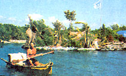

What would you do if you were living in a tropical paradise, needed a place to call your own, and were troubled by a proliferation of empty plastic bottles littering an otherwise unspoiled beach?
That was Richard Sowa's situation two years ago. The 46-year-old British artist was living about 60 miles south of Cancun on the Yucatan Peninsula. Over the next two years, he turned a personal vision into a community activity. Enlisting friends, neighbors and local schoolchildren, Sowa collected 100,000 empty bottles and packed them into fishnets to form the floating base for his new home. Sowa's island now stands - er, floats - at a modest 16 by 14 yards, and is complete with a sand floor and beach, a few palm trees, a one-room shelter and a composting toilet.
Local authorities, who gave the artist permission to build his island as a community project, consider it Mexican soil. Nevertheless, Sowa's plan is to add to the island in ever-growing spirals, until it reaches what he says will be an "oceanworthy" size of about 80 yards across.
He'd like to take it around the world. - AlanMetrick
This article has been adapted from an original article in The Amicus Journal, a publication of the National Resources Defense Council.
|
 |
|
|